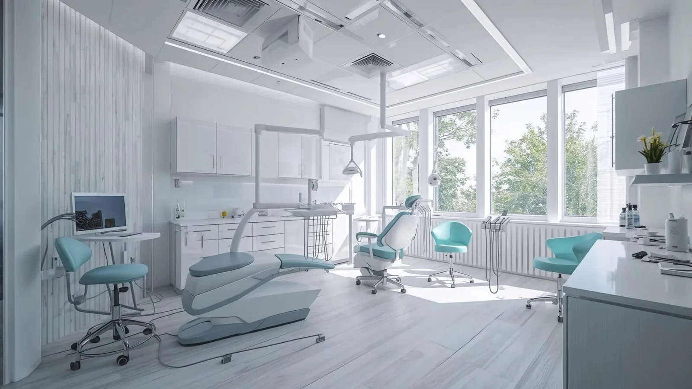

Our services
What we do here.
A general practice with a wider than usual range. Years spent in regional towns, where referral was rarely simple, mean Dr Meg handles a good deal of work in-house that many practices send elsewhere — implants, molar root canal treatment, surgical extractions.
That said, not everything belongs in a general practice. Where a case genuinely calls for a specialist, we will tell you and organise the referral.
Suitability for any treatment on this site can only be confirmed after a clinical assessment. Costs are explained in writing before treatment begins.

General & Preventive Dentistry
The regular care that keeps problems small: check-ups, cleans, fillings, gum treatment, children’s appointments, mouthguards and night guards, and same-day help when something goes wrong.
Explore
Restorative Dentistry
Rebuilding teeth that are damaged, decayed or missing — crowns, bridges, root canal treatment, partial dentures and extractions. Crowns and bridges are made by a dental laboratory rather than milled chairside.
Explore
View Restorative Dentistry →Dental Implants
Assessment, placement and restoration of single and multiple implants, planned with 3D CBCT imaging. Dr Meg has undertaken extensive implant and bone grafting training and places implants herself.
Explore
View Dental Implants →Cosmetic Dentistry
Treatment aimed at the appearance of your teeth, discussed honestly. We will tell you when a conservative option would serve you better than an irreversible one.
Explore
View Cosmetic Dentistry →Laser & Digital Dentistry
A diode laser for selected gum procedures, digital intra-oral scanning in place of putty impressions, and 3D CBCT imaging for planning.
Explore
View Laser & Digital Dentistry →